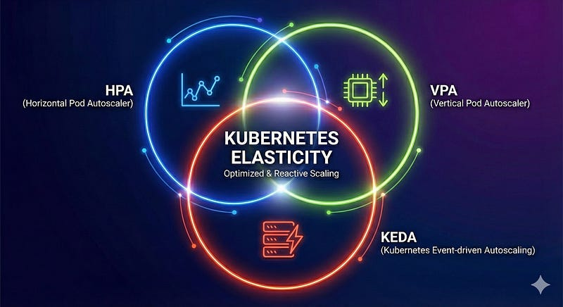
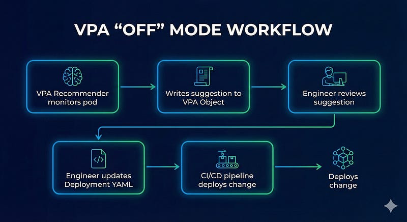
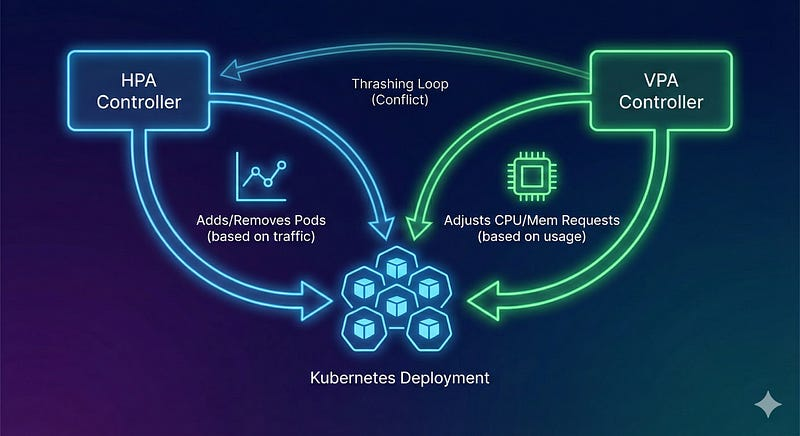

Most engineering teams start their Kubernetes journey with a simple goal: “Make it scale.” They enable the Horizontal Pod Autoscaler (HPA), set a CPU target, and assume the job is done. While HPA is the indispensable foundation of cloud-native elasticity, relying on it effectively requires understanding its boundaries.
A truly resilient production environment doesn’t just “add more pods.” It right-sizes them dynamically and reacts to events before they become outages. To achieve this, one must orchestrate the three distinct operators of Kubernetes scaling: HPA (The Scaler), VPA (The Right-Sizer), and KEDA (The Event-Driven Trigger).

Horizontal Pod Autoscaler (HPA)
HPA is the bread and butter of Kubernetes scaling. It is the default mechanism for handling variable traffic patterns in stateless applications. Think of it as a highway manager that opens more lanes when traffic slows down.
How it works
The Kubernetes Controller Manager runs a control loop (defaulting to every 15 seconds). It queries the Metrics Server for resource usage (like CPU or Memory). If the observed usage exceeds the target defined in the manifest, it calculates the necessary number of replicas to bring the average back down and updates the Deployment.
Example
Consider a standard Node.js REST API. During peak hours, user requests drive CPU usage up. HPA detects this rise and adds replicas to distribute the load.
apiVersion: autoscaling/v2
kind: HorizontalPodAutoscaler
metadata:
name: backend-api-hpa
spec:
scaleTargetRef:
apiVersion: apps/v1
kind: Deployment
name: backend-api
minReplicas: 3
maxReplicas: 15
metrics:
- type: Resource
resource:
name: cpu
target:
type: Utilization
averageUtilization: 75Advantages
- Native stability : It is built-in, robust, and requires no extra CRDs for basic CPU/Memory scaling.
- High availability : By increasing replica counts, it spreads risk across multiple nodes.
Limitations
- Reactive nature : It scales only after the metric (CPU) has spiked. For sudden traffic bursts, users might experience latency before new pods are ready.
- Metric blindness : It struggles with complex metrics (like queue depth) without an adapter.
Vertical Pod Autoscaler (VPA)
While HPA handles quantity, VPA handles quality. It ensures that the individual pods are the right size. Over-provisioning wastes money, while under-provisioning leads to OOMKills (Out of Memory crashes) and CPU throttling. VPA automates this tuning process.
How It Works

VPA watches the actual historical usage of pods.
- Recommender : Analyzes usage history to suggest ideal CPU/Memory requests.
- Updater : Evicts pods that need to be resized.
- Admission Controller : Intercepts the creation of the new pod to inject the corrected resource limits.
Example
A Java microservice is deployed with a 2GB memory request, but in reality, the JVM heap only uses 600MB. VPA identifies this waste and can shrink the request, allowing the cluster to pack more pods onto the same node. Conversely, if a Python worker keeps crashing from OOM errors, VPA will automatically increase its memory limit.
apiVersion: autoscaling.k8s.io/v1
kind: VerticalPodAutoscaler
metadata:
name: java-service-vpa
spec:
targetRef:
apiVersion: apps/v1
kind: Deployment
name: java-service
updatePolicy:
updateMode: "Off" # Highly recommended for Production firstAdvantage
- Cost Efficiency : Automatically reclaims unused resources, lowering cloud bills.
- Stability : Prevents noisy neighbors and random OOM crashes by right-sizing requests.
Limitations
- Disruption : Changing resource limits requires a pod restart. In auto mode, VPA will terminate running pods to resize them.
- Slow to adapt : It is designed for long-term trends, not instant reaction to traffic spikes.
Pro Tip: Always start with updateMode: "Off". This allows VPA to generate recommendations in the status field without restarting pods. Engineers can then manually apply these "Goldilocks" values to the deployment.K8S Event Driven Autoscaling (KEDA)
KEDA (Kubernetes Event-driven Autoscaling) fills the gap that HPA leaves behind. HPA scales on symptoms (High CPU), whereas KEDA scales on intent (Work waiting in a queue). It is essential for background workers and event-driven architectures.
How It Works
KEDA introduces a ScaledObject. It connects to external event sources (Kafka, RabbitMQ, AWS SQS, PostgreSQL, Prometheus) and acts as a metrics adapter. It feeds these external metrics to the HPA, allowing Kubernetes to scale based on the backlog of work.
Crucially, KEDA can scale a deployment to zero when there is no work, and back to one when an event arrives.
Example
A video processing service listens to an AWS SQS queue.
- 0 Messages: KEDA scales the deployment to 0. Cost is zero.
- 1000 Messages: KEDA sees the “lag” and immediately commands HPA to scale to 20 pods to clear the backlog.
apiVersion: keda.sh/v1alpha1
kind: ScaledObject
metadata:
name: aws-sqs-scaledobject
spec:
scaleTargetRef:
name: video-processor
minReplicaCount: 0 # Serverless-like behavior
maxReplicaCount: 50
triggers:
- type: aws-sqs-queue
metadata:
queueURL: https://sqs.us-east-1.amazonaws.com/123/video-queue
queueLength: "5" # Target 5 messages per pod
awsRegion: "us-east-1"Advantages
- Scale to zero : Perfect for intermittent workloads or dev environments
- Proactive : Scales based on the queue size before the system gets overwhelmed.
Limitations
- Complexity: Requires installing the KEDA operator and managing additional CRDs.
- Dependency Risk: If the external metric source (e.g., CloudWatch) has an outage, scaling may stall.
How They Coexist ?
The true power of Kubernetes is unlocked when these tools are used in harmony, but one must be careful to avoid conflicts.

The Golden rule of combination is
- HPA manages the replica count based on traffic/CPU.
- VPA manages the pod size(Requests/Limits) based on historical usage.
- KEDA feeds precise external metrics to HPA for smarter scaling decisions.
The problem
The hidden devil of configuration is ever enable HPA and VPA on the same metric (e.g., CPU) for the same workload.
- If HPA scales out to lower CPU usage.
- And VPA sees low CPU usage and shrinks the pod.
- The result is a “Thrashing Loop” where the two controllers fight, causing instability and waste.
The Solution
Use VPA primarily for memory sizing (where HPA is less effective) or run it in Off mode to generate reports. Let HPA (driven by KEDA or CPU) handle the traffic spikes.